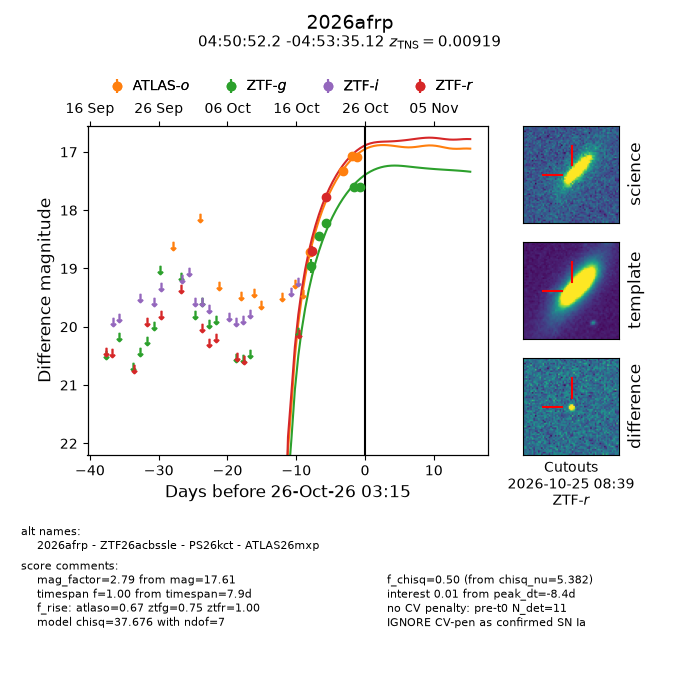
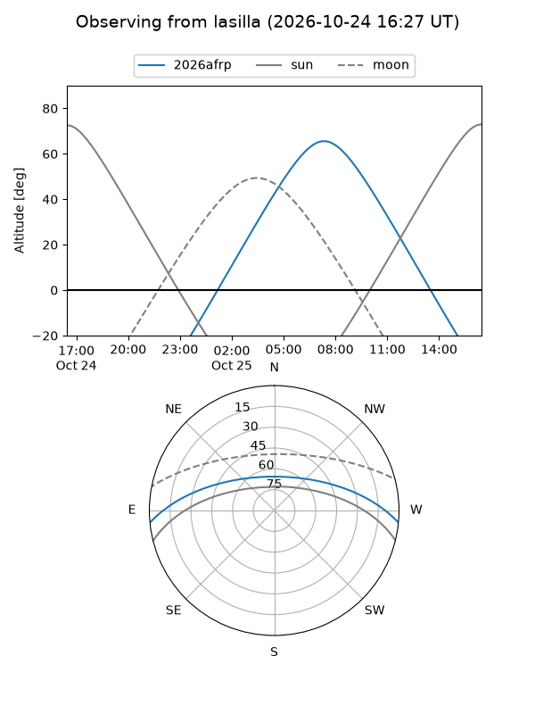
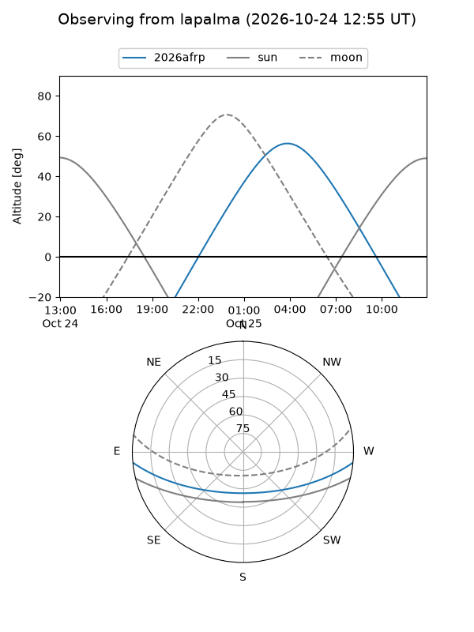
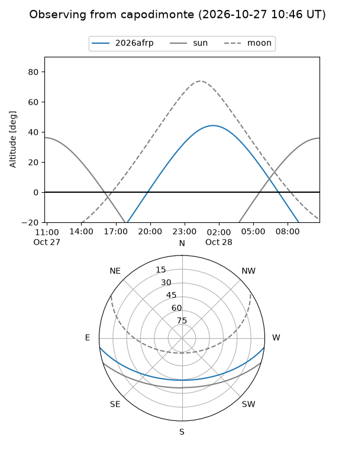
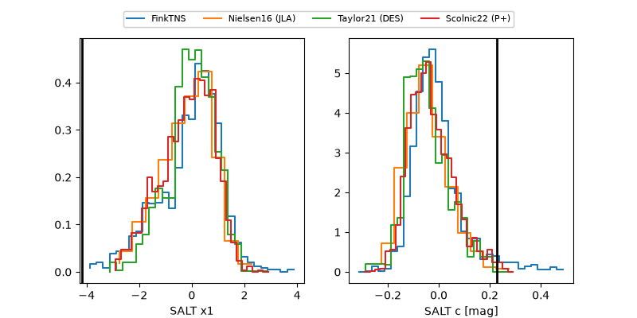

2026afrp
Target 2026afrp at 2026-10-26 03:17
Aliases and brokers:
FINK-ZTF: ztf.fink-portal.org/ZTF26acbssle
Lasair-ZTF: lasair-ztf.lsst.ac.uk/objects/ZTF26acbssle
ALeRCE-ZTF: alerce.online/object/ZTF26acbssle
YSE-PZ: ziggy.ucolick.org/yse/transient_detail/2026afrp
TNS name: wis-tns.org/object/2026afrp
Direct TNS query: direct search
alt names
ZTF26acbssle (ztf,fink_ztf)
2026afrp (tns,yse)
PS26kct (panstarrs)
ATLAS26mxp (atlas)
Coordinates:
equatorial (ra, dec) = 72.7176,-4.89309
equatorial (HMS+DMS) = 04:50:52.22,-04:53:35.12
galactic (l, b) = (202.9131,-28.95789)
Flags:
TNS type: SN Ia
TNS redshift: 0.0092
peak dt: -8.4
Photometry:
last atlaso=17.08, ztfg=17.61, ztfr=17.78
4 atlaso, 5 ztfg, 2 ztfr detections
Lightcurve

Visibility



Additional plots
